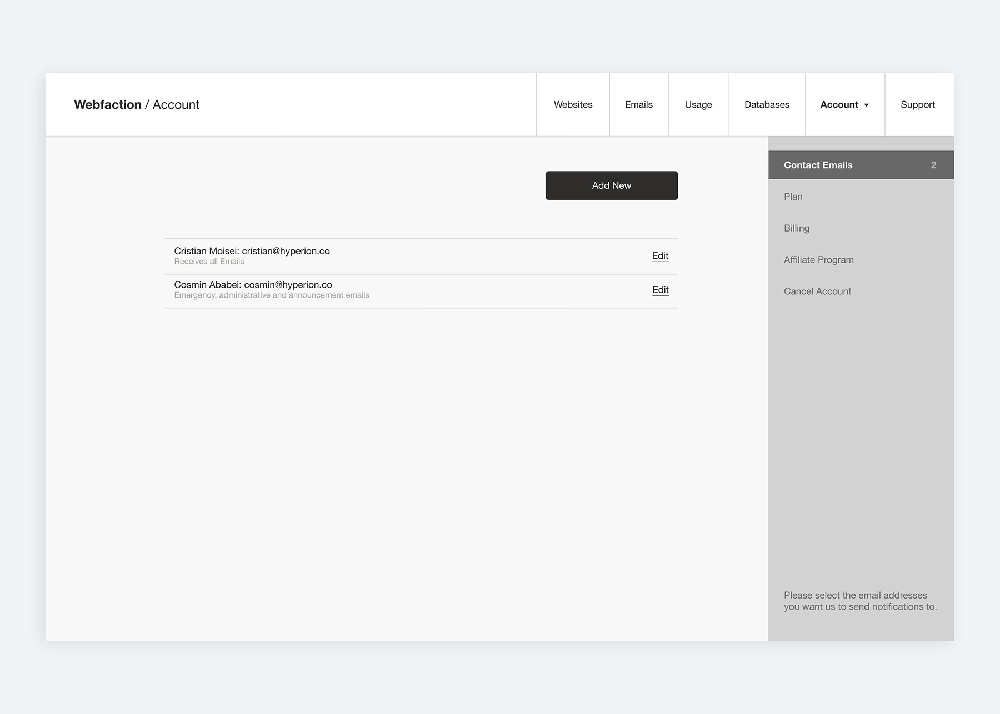
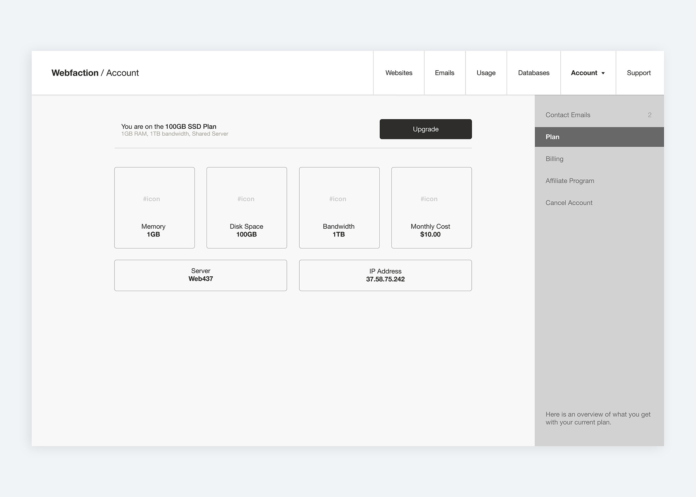
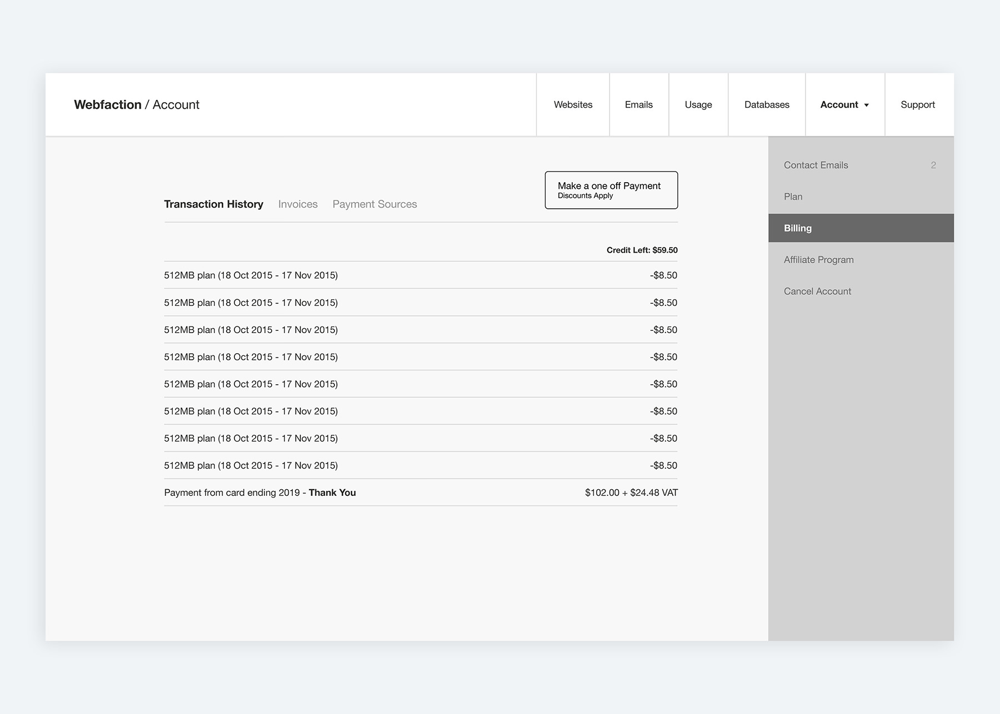
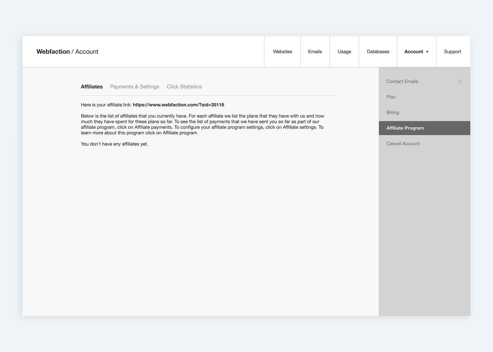
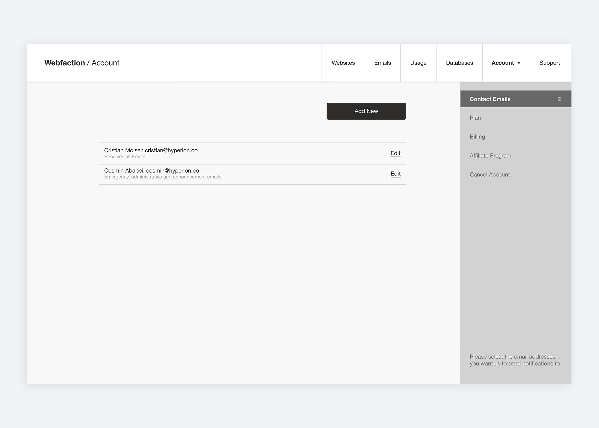
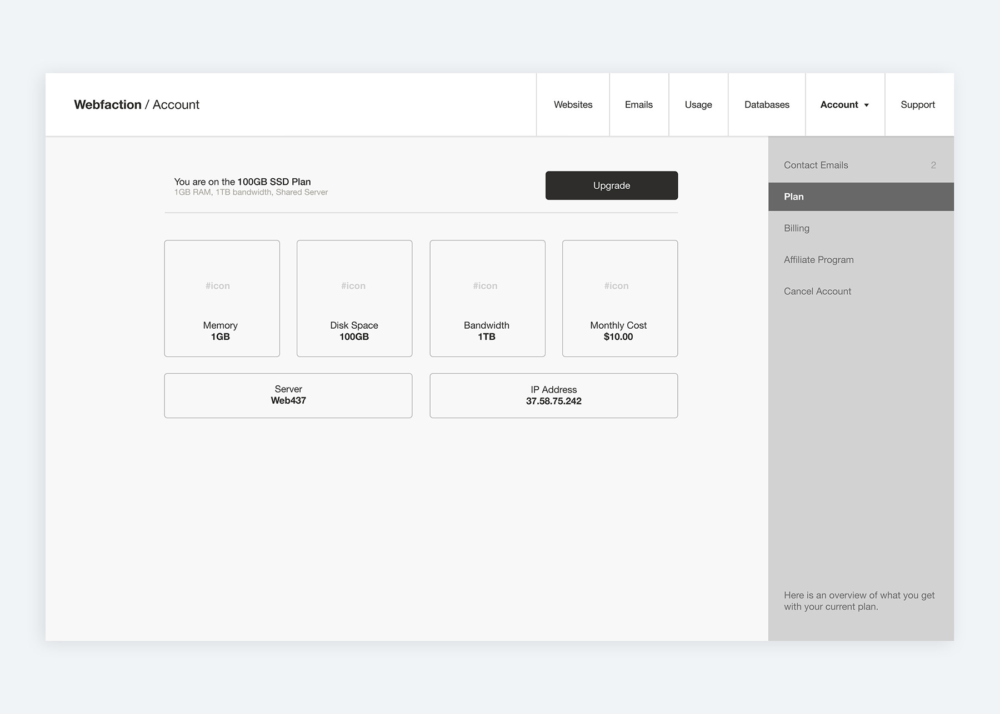
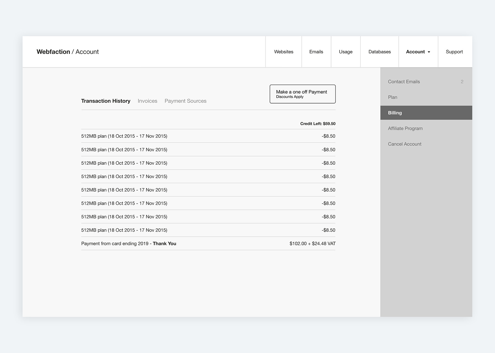
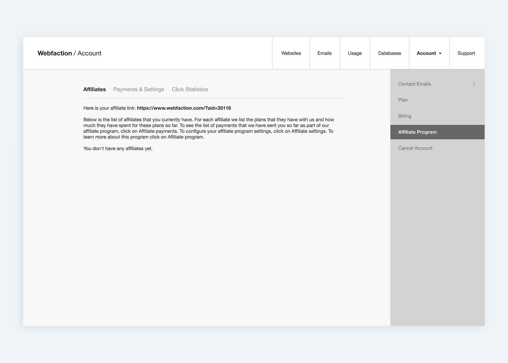

Webfaction
Webfaction is a managed hosting provider aimed at developers with a great offering, great pricing, awesome support and one of the most awkward and difficult to use interfaces I have ever seen. I worked with them while running Hyperion in order to, on one hand, make the product more accessible to less technical users and capture a segment of that market but also simplify the interface for existing users who were equally frustrated with how difficult to use it was.
My responsibilities included managing the project, conducting user research, interface and experience design and development oversight.
After talking to the company's founders, running a series of user interviews and looking at the analytics and support tickets, we found that a significant number of users find the interface confusing and have to contact support to understand how to achieve basic goals.
Problems Identified
Goals are hard to achieve
Unclear Hierarchy
Confusing Terminology
Lacking key Statistics
Not friendly to beginners
Dated design
Not Responsive
Starting to explore solutions
Once I had a good idea of what the biggest problems were for users, what sections they used most frequently and what they usually wanted to achieve with the interface, I started exploring ideas for how to improve it.
For example, for less technical users, their goals would be to set up their first website, check their usage and billing and create new email addresses. More technical users would need to create databases and database users, configure SLL certificates, manage FTP users permissions, and contact support about how to do more advanced things like connecting via SSH. None of which were easy to do with the current interface. I started with paper sketches because of their low fidelity - I could explore ideas quickly without having to consider the visuals at all.
Also at this stage, I decided to document the structure of the current interface and that of my proposed interface to make it easy to stay on the right track and ensure every part of the new design is in the right place.
Preliminary Design
I tested the usability of the structure that the stakeholders and I agreed on and made sure it actually helped us meet the goals of the redesign, and then started to work on the first version of the design.
After several iterations, my colleague and I created an HTML/CSS + sliced up images prototype to do more testing. We opted for this solution because the interface is quite complex and tools like InVision would not have felt as realistic, and we decided it would be best to get as close to the real thing as possible for this stage.
The interface was well received and once I ironed out the last remaining details in the design, my colleague and I started developing it.
Aftermath
Webfaction came under new management shortly after we finished the interface and decided to stop investing in the back-end changes that would have been needed for our interface to go live, so, unfortunately, the new UI was never fully released.
We did however run tests with an interface powered by a mock-server and the users we tested with responded very well to it. I asked users to try and complete their most important tasks without any assistance or instructions and evaluated the degree to which they succeeded. They reported it was:
Easier to achieve their goals
Friendlier to beginners
Clearer to navigate
Providing a good experience on mobile devices
Return Home
 






